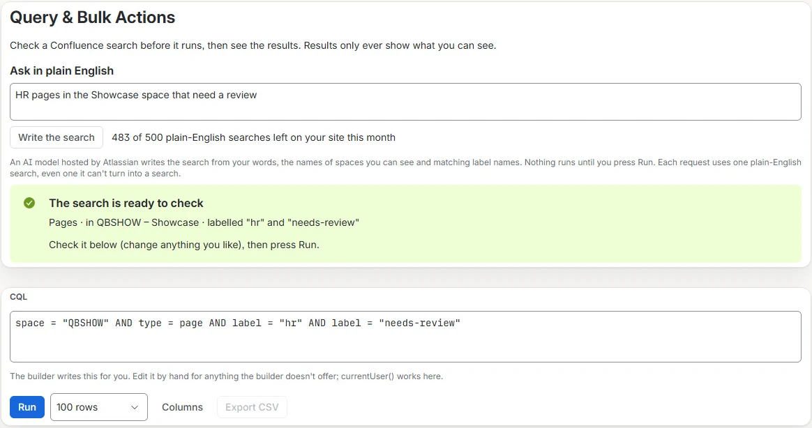

How to search Confluence with CQL (and check a plain-English search)
CQL (Confluence Query Language) finds pages by space, label, date, people, words and where they sit in the page tree, but Confluence Cloud's search screen has no box to type it into. You can run CQL from the address bar, or use an app with a CQL box, which can also write the CQL for you and show it before it runs.
With Confluence on its own
- Write the search, for example
type = page AND space = "DOCS" AND lastmodified < now("-12M"). The CQL cheat sheet lists the fields and operators. - In the address bar, type your site's address followed by
/wiki/search?cql=and the search:https://your-site.atlassian.net/wiki/search?cql=type = page AND space = "DOCS". - The results open in Confluence's normal search screen. For a count, use
/wiki/rest/api/search?cql=instead, which returns JSON with the total intotalSize.
Where it falls short
- No count and no error messages in the search screen: a typo looks the same as “no results”.
- You have to know CQL, including the quotes and brackets.
- Nothing to keep or act on: a search can't be saved there, shown on a page, exported or used to change the pages.
Write it, check it and run it with Query & Bulk Actions
- A Confluence admin installs Query & Bulk Actions; anyone can then open it from the Apps menu.
- Write the search three ways: type CQL in the CQL box; build it with drop-downs (the builder writes the CQL as you go); or type what you want in Ask in plain English and press Write the search.
- Check it before it runs. A plain-English request becomes CQL with a one-line description, such as “Pages · in HR · labelled needs-review”. Nothing runs until you press Run, so you can correct it first.
- Press Run. Results show their count, and a mistake in the CQL is explained in plain words.
- Save the search, show its live results on any page with the Query results macro, export it, or change the results in bulk.

“Ask in plain English” uses an AI model hosted by Atlassian. It receives your request and the names of spaces and matching labels you can see, never page content, and Kitefold doesn't store what you type. See the help for details.
Disclosure: Kitefold makes Query & Bulk Actions, so we're not neutral. The address-bar search is free and works for any CQL.
Related guides
- Confluence CQL cheat sheet
- Confluence clean-up searches with CQL, and what CQL can’t find
- How to export Confluence pages to Markdown (with images)
Checked against Confluence Cloud in November 2026, on our test site. Confluence changes often; if something here no longer matches what you see, email support@kitefold.app and we'll update it.